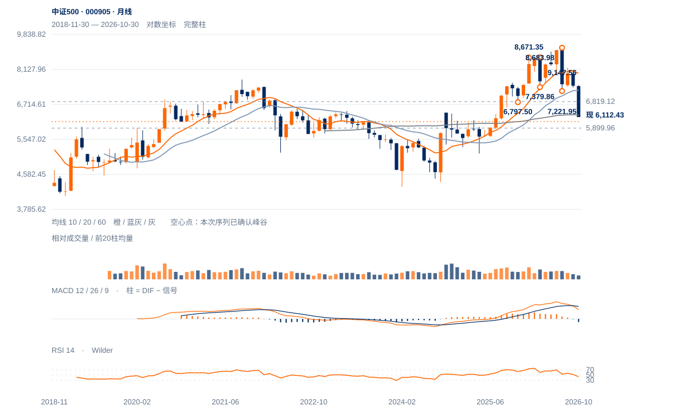

旧低回收但供给未解
未来1—5个交易日倾向6254附近反复，先看6335—6418反抽是否受阻。若回收后仍不能离开旧低区，下一次测试的风险高于仅凭下影判断已经见底。
未来1—5个交易日倾向6254附近反复，先看6335—6418反抽是否受阻。若回收后仍不能离开旧低区，下一次测试的风险高于仅凭下影判断已经见底。
未来2—6周以“旧低回收但供给未解”为基准。旧谷附近反弹若不能越过较低高区，中期下降结构继续约束反抽空间。日收回6418—6500并保持才减轻压力；原6820升级门槛继续跟踪。原6254日收失效未触发；后续收低6254撤销旧低承接，新6194.85仅为今日极值。
未来1—3个月仍检验6140—6418历史突破带的重建，完整20月均衡7256尚远。连续两周低于6254增加深回撤风险；重返6714并形成较高周谷才支持更大筑底，短暂穿越6335不能等同长趋势恢复。

展开图表 ↗2024旧高6418与60月均衡6335附近组成历史突破回测区；今年9148大高后周线反弹峰降低，长期承接尚未转成趋势反转。完整10月20月均衡7,256.05；本月价格变化尚未成为已完成月线确认。
已完成周线的主要锚点：2026-08-18高8,211.31；2026-09-11低7,451.12；2026-09-22高7,922.62。从这些同级峰谷观察，中期恢复尚需较高谷与越过反弹高点相继出现，单根下影或当日涨幅不能替代。本周仍未结束，18日表现只作进行中周的观察。
18日最低6194.85，盘中穿过11月2日6253.79，收6282.22几乎平盘并回到旧谷上方。旧6254日收失效没有发生；但收盘仍低于2024旧高6418和完整60月均衡6335，18日高6335.25恰到该均衡附近，尚未收复。相对量0.82倍，下探幅度扩张却无收盘扩展，需要下一步买方进展才能确认吸收。
2026-09-22高7,922.62（2026-09-30确认）；2026-11-02低6,253.79（2026-11-09确认）；2026-11-05高6,819.12（2026-11-12确认）
日收回6418—6500并保持才减轻压力；原6820升级门槛继续跟踪。
原6254日收失效未触发；后续收低6254撤销旧低承接，新6194.85仅为今日极值。
向下探穿后几乎收平，说明当天卖方没有把低价保持到收盘；若接着上破6335并越6418，支撑角色可恢复。低量同样可能来自需求不足，暂不能确认吸收。
RSI14 34.87；ATR14 180.94；相对成交量0.82倍；ER20 0.221。
完整周线至11月13日，完整月线至10月30日；本周与11月尚未结束。指数价格不复权；长期历史按实际可得起点。